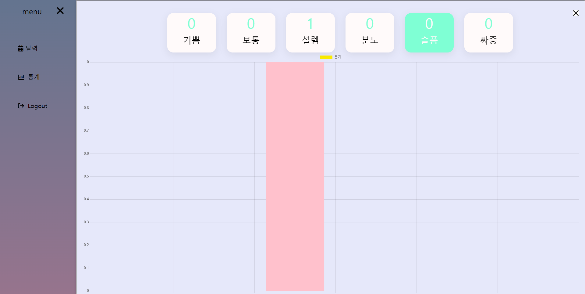

Emotion_calendar
프로젝트를 시작하게 된 이유?
나의 하루를 기록을 하는데에 있어 글로 표현을 하려니 어려움을 많이 느껴 차라리 색깔이나 이모티콘으로 표현하면 어떨까라는 호기심에서 이 프로젝트를 시작하게 되었습니다.
개발기간은 2022년 6월 28일부터 2022년 7월 11일까지 약 3주간 진행했고 개발인원은 2명(프론트1, 백엔드1)이고 그 중 백엔드를 맡아 진행했습니다.
느낀점
7개월간 배운걸 총 사용하여 만들어 보았습니다.
팀원과의 소통의 중요성 느꼈습니다.
소통이 잘 되지 않으니 깃으로 프로젝트를 관리하며 개인프로젝트에서는 느끼지 못했던 commit 충돌 이슈를 경험하였습니다.
그리고 요구사항 분석및 프로젝트 일정 관리에 대한 중요성을 알게 되었습니다.
요구사항을 너무 짧게 조사하여, 중간중간에 기능을 많이 갈아엎기도 했고,
그러면서 프로젝트 일정에도 문제가 생겨 결국 처음에 생각한 기능들을 구현하지 못하고 오히려 기능들을 많이 줄여나가게 되었습니다.
보안점
작업을 하면서 UI의 중요성을 깨달았고 기간안에 UI를 전부 손보지 못한 아쉬움이 있습니다.
다음에 작업을 하게 되면 프로젝트를 시작하기 전에 요구사항 분석 시간을 충분히 주어 조사를 충분히 하겠습니다.
팀프로젝트에서 소통은 필수라는 것을 알게 해준 프로젝트였습니다.
다음에 또 팀프로젝트를 진행을 하게 되면 팀원들과 충분한 소통을 하여 팀원과 불필요하게 소모되는 시간들을 줄여나가겠습니다.
해당 프로젝트는 http://15.164.213.24:8080/main에서 확인할 수 있으며, 계정은 999, 999 입니다.
프로젝트 소스는 https://github.com/Increase-team/emotionDiary에서 확인할 수 있습니다.
Technologies:
- - HTLM5 & CSS3
- - JavaScript
- - Jquery
- - AJAX
- - Git
- - Restful API
- - Spring Boot(2.6.7v)
- - Spring Security
- - Spring poi
- - Java(12.0.2v)
- - MySQL
- - Mybatis
- - Gradle
- - JSP&JSTL
- - Eclipse
- - VScode
- - AWS EC2(centOS)
- - AWS RDS(MySQL)
메인 기능1
화면 좌측에 6개의 버튼을 클릭을 하면 달력에 색깔이 들어갑니다.
메인 기능2
기록한 감정들의 통계를 그래프를 통해 보기 쉽게 만들어봤습니다.
